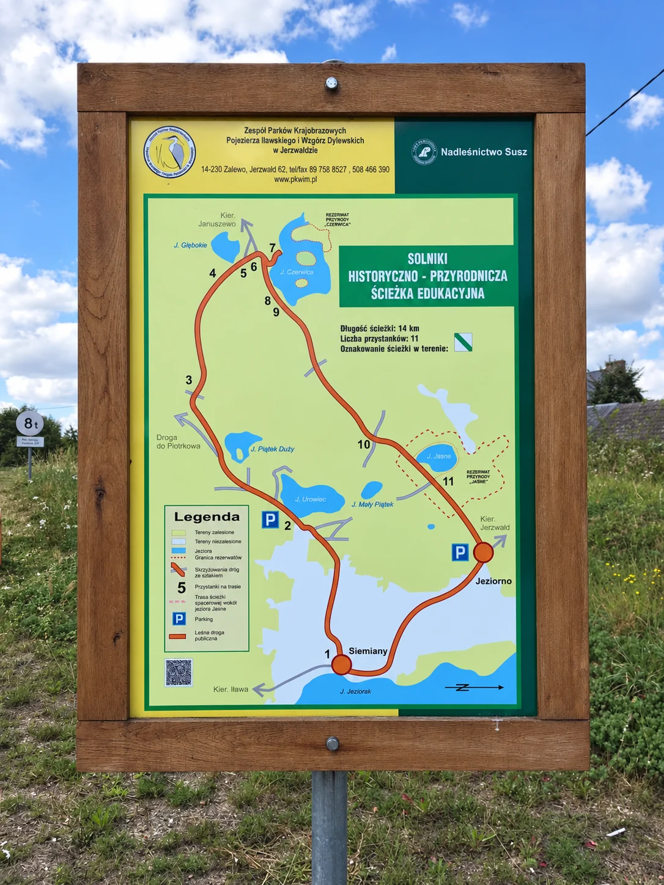

Najpierw była smolarnia
Solniki (dawne Zollnick) wyrosły w połowie XVIII wieku na bazie wcześniejszej smolarni. Mieszkańcy leśnej osady zajmowali się przede wszystkim wyrębem lasu na potrzeby pobliskich Siemian.
To ważny detal: historia Solnik i Siemian jest wspólna. Dzisiejsza cisza lasu przykrywa teren, który dwa stulecia temu był miejscem pracy, produkcji i codziennego życia.
Christian Korn i huta szkła
Najbardziej znanym właścicielem Solnik był Christian Korn. Około 1850 roku założył tutaj hutę szkła, produkującą głównie szkło apteczne wysyłane m.in. do Tylży, Elbląga i Królewca. Z hutą związana była Solnicka Góra; w terenie zachowały się również punkty wskazywane jako dawne magazyny i dmuchalnie szkła.
Pod koniec lat 60. XIX wieku Korn wszedł w interesy z kupcami żydowskimi, ale przedsięwzięcie zakończyło się bankructwem. Huta przeszła w ręce wierzycieli, a na jej terenie uruchomiono tartak. Funkcjonował do 1887 roku, kiedy majątek kupił Elard von Oldenburg z pobliskiego Januszewa.
Osada znika pod lasem
Teren dawnej wsi został ponownie zalesiony. W latach 20. XX wieku Las Januszewski przeszedł pod zarząd państwa pruskiego. Na ruinach dworu Christiana Korna zbudowano leśniczówkę, a w dawnej szkole działało schronisko młodzieżowe.
W 1945 roku zabudowania zostały spalone. Po wojnie naprzeciw ruin szkoły wzniesiono dom dla robotników leśnych - dziś jest to jedyny zachowany budynek dawnej osady.
Co można odczytać z mapy i terenu
Tablice ścieżki prowadzą nie tylko przez przyrodę. Zaznaczono na nich m.in. stary cmentarz, dawne założenie folwarczne z dworem, miejsca związane z hutą i tartakiem, Solnicką Górę ze śladami osadnictwa z epoki kamienia, dawną szkołę, starą karczmę, dom dmuchaczy szkła oraz obszar dawnej zabudowy wsi.

14 km: przyroda i historia na jednej pętli
Oznakowana ścieżka ma około 14 km i 11 przystanków. Łączy Siemiany, okolice Urowca i Plajtków, rezerwat Jezioro Jasne, Jeziorno, Solniki i okolice rezerwatu Czerwica. To jedna z najlepszych tras, jeśli podczas jednego wyjścia chcesz zobaczyć małe jeziora, las i ślady dawnego osadnictwa.